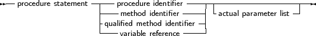

Procedure statements are calls to subroutines. There are different possibilities for procedure calls:
All types are present in the following diagram:
_________________________________________________________________________________________________________Procedure statements

___________________________________________________________________
The Free Pascal compiler will look for a procedure with the same name as given in the procedure statement, and with a declared parameter list that matches the actual parameter list. The following are valid procedure statements:
Usage;
WriteLn(’Pascal is an easy language !’); Doit(); |
Remark: When looking for a function that matches the parameter list of the call, the parameter types should be assignment-compatible for value and const parameters, and should match exactly for parameters that are passed by reference.